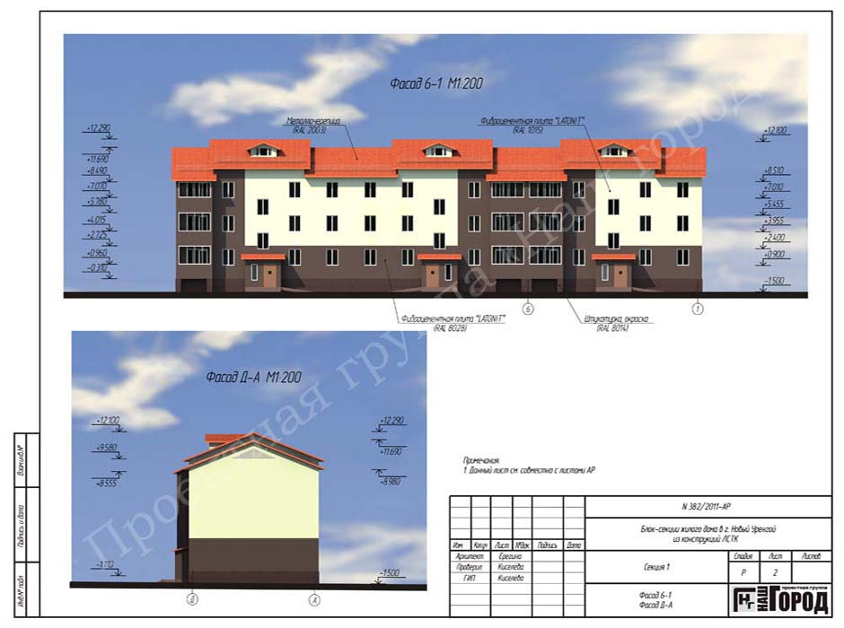
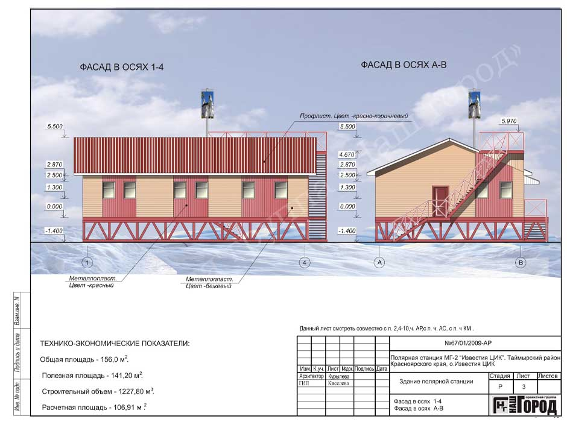
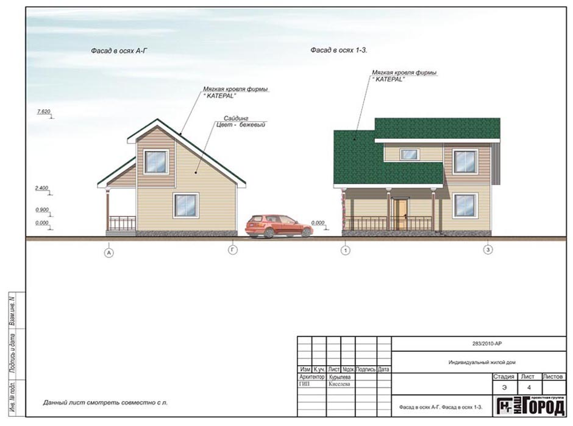
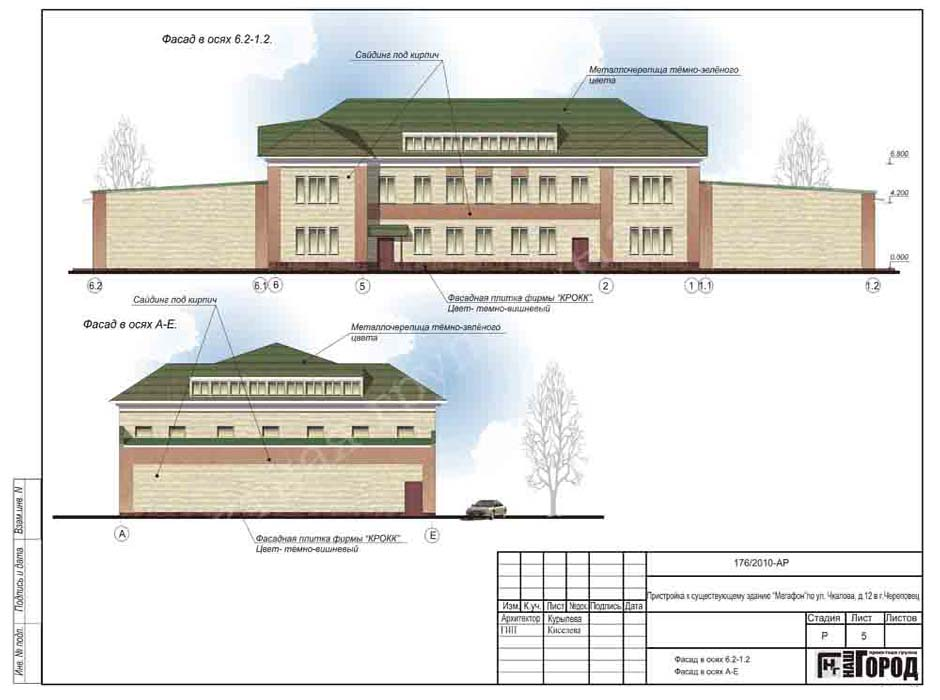
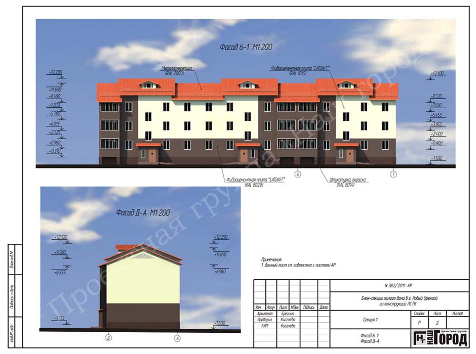
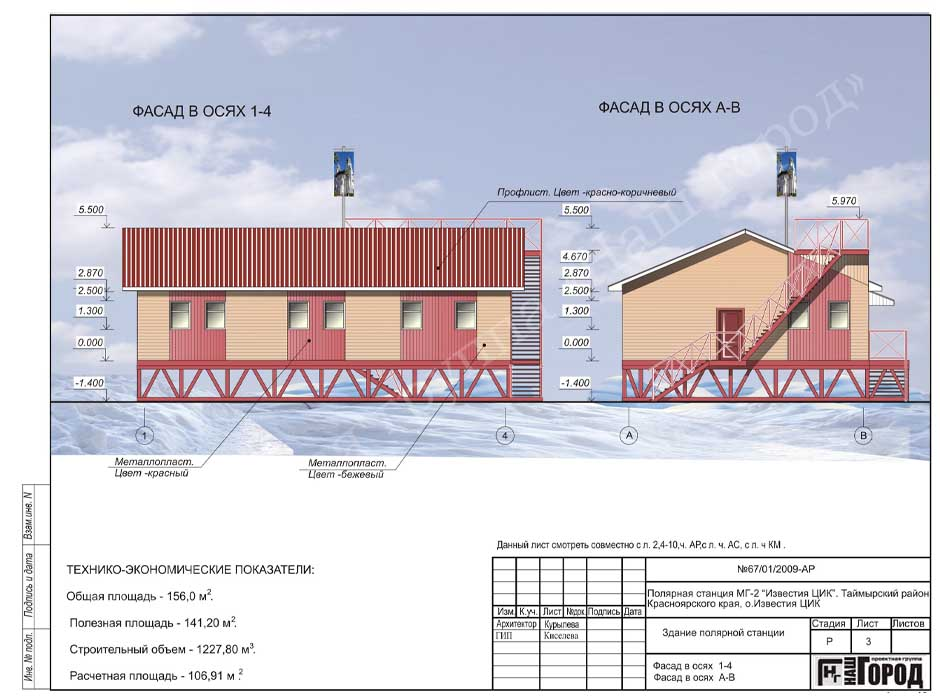
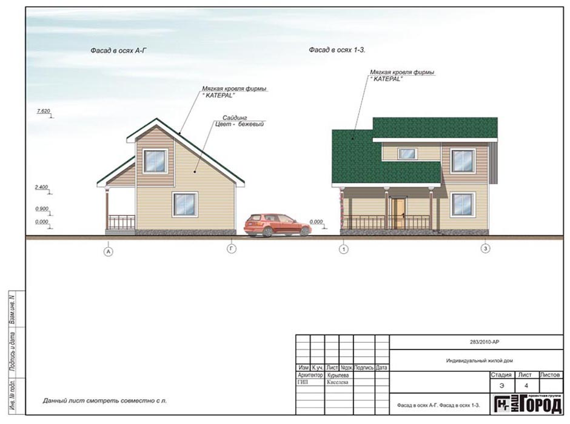
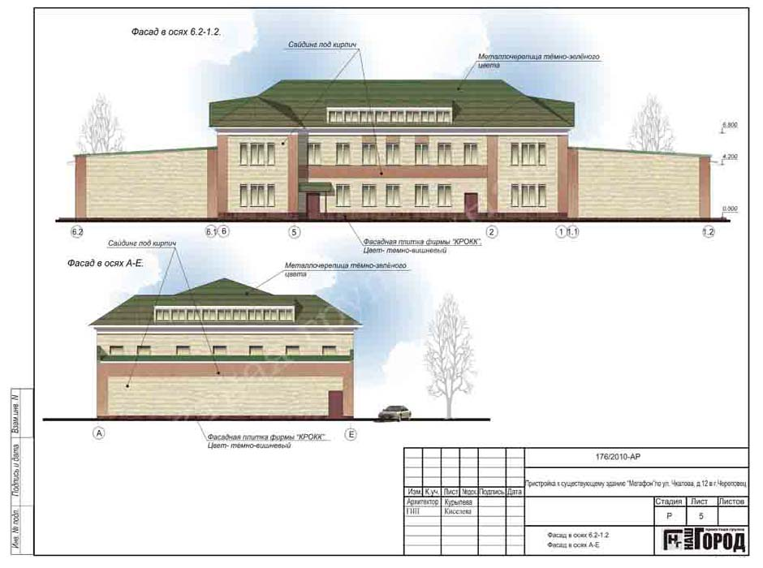

Проектирование
Проектные услуги в Череповце и России
Выполняем проектирование зданий и сооружений по технологии ЛСТК.
Разрабатываем проекты домов, коммерческих площадей, промышленных объектов под любую строительную технологию (кирпич, легкие бетоны, железобетон, каркасные технологии).
Адаптируем любой проект под ЛСТК.
Прочие виды проектных работ по СРО.
Преимущества проектной организации
Мы работаем на рынке проектных услуг с 1995 года и являемся официальным представителем на территории России шведской фирмы Lindab родоначальника и мирового лидера каркасного строительства из ЛСТК.
Сотрудники ПГ Наш город систематически обучаются, занимаются научными разработками в области строительства.
Опыт, накопленный за 20 лет работы, позволяет разрабатывать проекты любого уровня сложности.
Наши проекты
Полярная станция, коттеджи, многоквартирные дома, магазины, кафе, торговые центры, сооружения культуры и спорта, детские сады, школы, склады, ангары, заводские цеха, надстройки этажей и мансард, реконструкция кровли, - объекты, построенные по нашим проектам в Череповце и по всей территории России.
Направления деятельности и наши услуги:
- Проектирование многоквартирных домов
- Проектирование коммерческой недвижимости
- Промышленное проектирование
- Проектирование домов, коттеджей
- Проекты бань, пристроек, мансард и прочих объектов.
На основе федеральной программы по расселению ветхого и аварийного жилья нами разработано более 50 проектов многоквартирных жилых домов из ЛСТК для строительства в Череповце и других городах РФ.
Проектирование для прохождения экспертизы
Проектная организация Наш Город имеет разрешение на проектирование всех разделов документации, предусмотренной законодательством Российской Федерации и является членом СРО Северо-Западный альянс проектировщиков .
Выполняем функции генерального проектировщика, разрабатываем все разделы проекта для прохождения экспертизы:
- эскизный проект здания;
- планировка внутренних помещений;
- генеральный план застройки;
- архитектурная и строительная части проекта;
- разработка каркаса ЛСТК здания;
- отопление и вентиляция (ОВ);
- водопровод и канализация (ВК);
- электроснабжение;
- сметная документация.
Проектирование электроснабжения и коммуникаций
Выполняем проектирование инженерных сетей для объектов промышленного и частного строительства. Разработанная документация поможет выполнить электрификацию дома, магазина или предприятия в соответствии с действующими нормативами.
Разрабатываем проекты вентиляции, проекты водоснабжения и других коммуникаций.
Схема организации земельного участка
Для получения разрешения на строительство в Череповце и любом городе России необходима схема организации земельного участка. Этот документ сегодня заменяет генеральный план застройки и может выполняться компанией, имеющей для этого соответствующую лицензию.
Имеем сертификат для выполнения данной работы.
Примеры проектов
 






